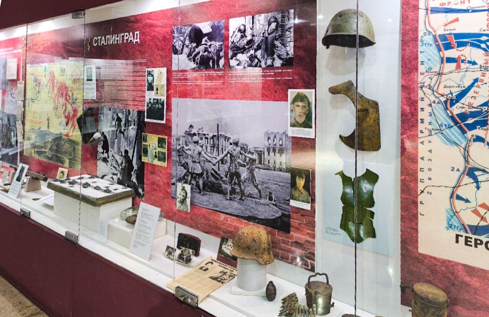
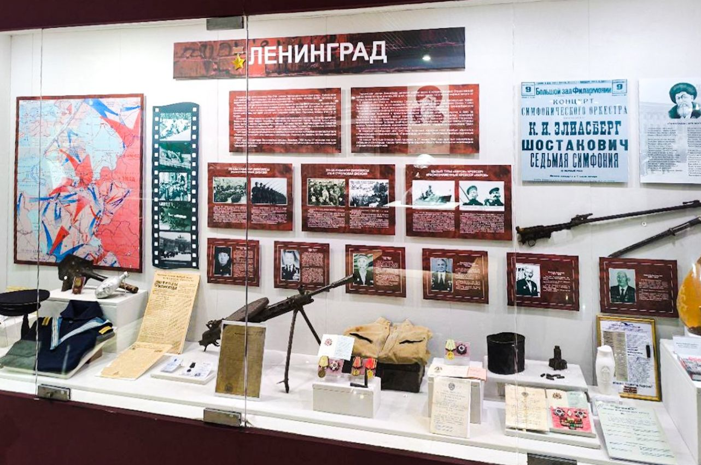
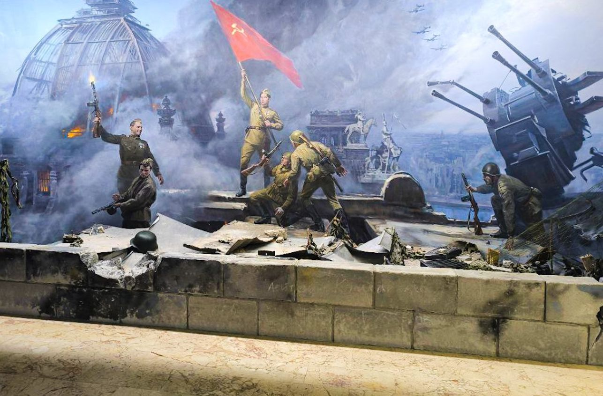

Военная история XX века
Остановка 3 из 10
Музей в самом человечном своём проявлении: карты, каски, плакаты и личные вещи войн, определивших XX век.

От начала XX века до Афганистана
Зал XX века охватывает важнейшие военные и политические периоды, включая алашский период, Великую Отечественную войну и участие граждан Казахстана в войне в Афганистане. E-Museum прямо называет эти темы частью зала.
Сталинград и Ленинград
Два самых больших стенда отданы обороне Сталинграда и Ленинграда. За касками, котелками, полевым снаряжением и предметами быта стоят панели с картами и фотографиями. В ленинградской витрине есть даже афиша концерта с Седьмой симфонией Шостаковича — напоминание о том, что культура была частью сопротивления осаждённого города.
Өмір мен өлім арасындағы заттар
Заголовок музейной витрины, сфотографированной в зале, — по-русски «Предметы между жизнью и смертью».
Казахстан и Великая Отечественная война
В исследовании 2024 года рассматриваются воинские формирования, созданные в Советском Казахстане в 1941–1942 годах. По данным работы, за этот период в Казахстане было сформировано более 50 частей и соединений, включая стрелковые дивизии, национальные кавалерийские дивизии и бригады.
Та же работа описывает формирование 310-й, 312-й, 314-й и 316-й стрелковых дивизий в Акмолинске, Актюбинске, Петропавловске и Алма-Ате.
Историческое исследование
Научные исследования по военной истории Казахстана рассматривают историю войн, военное искусство, вооружённые силы, военную технику и военную мысль как взаимосвязанные области.
Фотографии из этого зала
Нажмите на фото, чтобы открыть его в полном размере.





